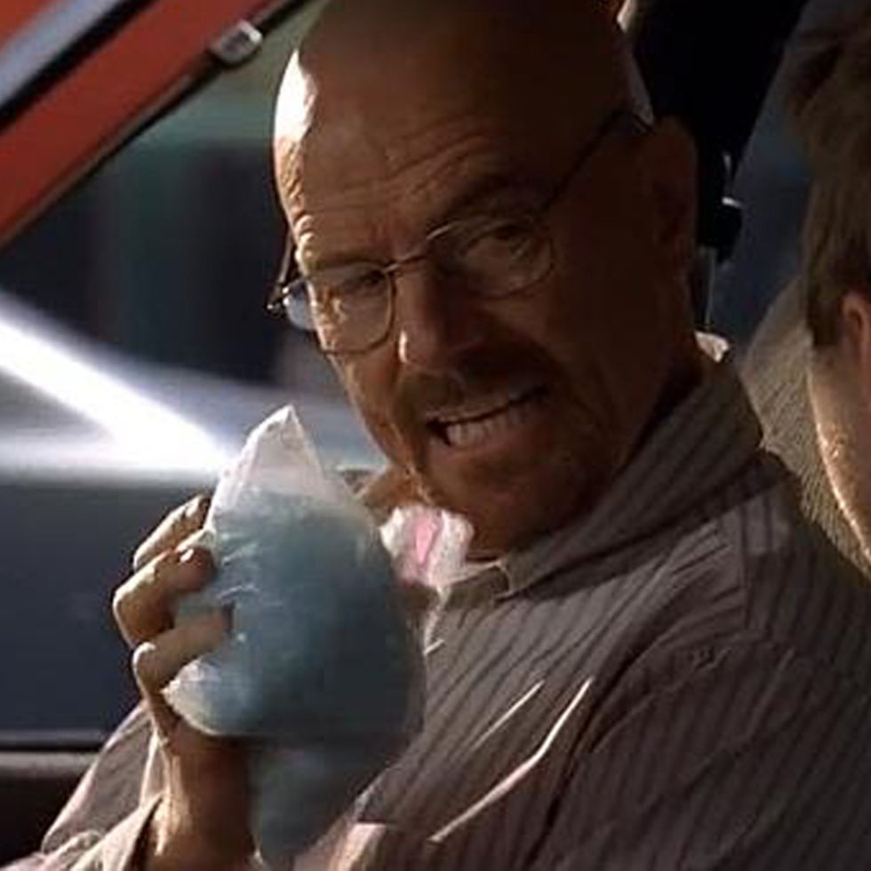

Crystal Meth

A wild ride best enjoyed with a friend
Amazing way to start the weekend
Ingredients
- Acetone, from paint thinner or nail polish remover
- Anhydrous ammonia, found in various household cleaners
- Sulfuric acid or hydrochloric acid, which is typically extracted from over-the-counter drain cleaners
- Toluene from brake fluid
- Phosphorous, extracted from flares, matches, and other substances
- Ether or chloroform
- Freon from air-conditioning units
- Energy drink of using over-the-counter medications
- Alcohol
- Benzene and gasoline
- Lithium, which is removed from car batteries
Steps
- Ephedrine or pseudoephedrine is combined with ammonia and lithium or iodine and phosphorus.
- Mixed in with water.
- A solvent like gasoline is added, and the person extracts the methamphetamine.
- The mixture is heated by using the acid or some other substance (e.g., gasoline) to crystallize the product.
Back to main page